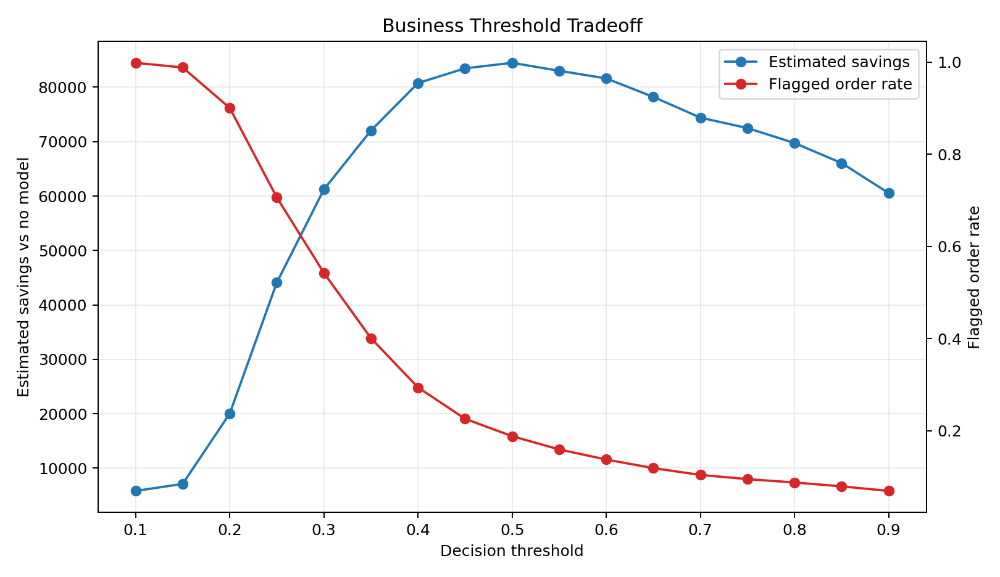
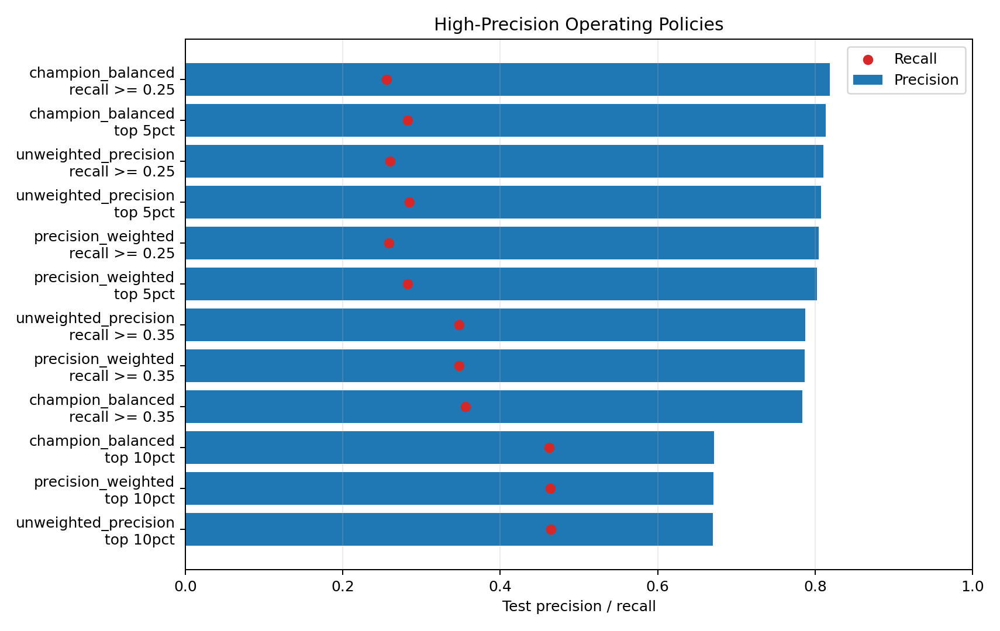
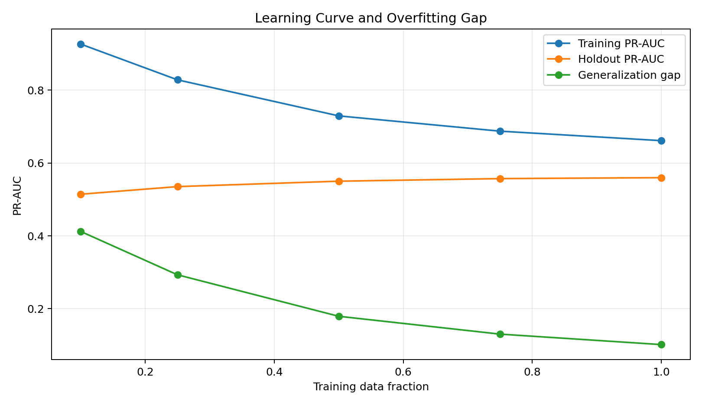
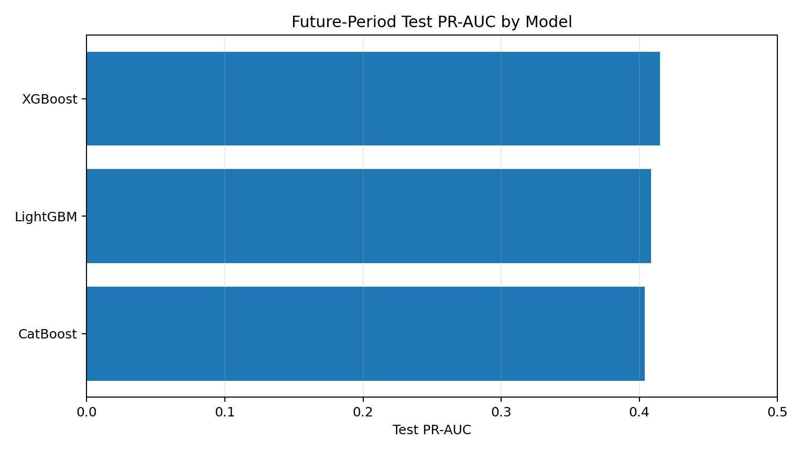

Raw e-commerce tables
Orders, customers, sellers, products, payments, reviews, and order items.
Machine learning case study
A decision-support system that ranks orders by bad-review risk so support teams can focus on the customers most likely to have a poor experience.
What happened
Orders, customers, sellers, products, payments, reviews, and order items.
Delivery delay, seller reliability, category risk, payment patterns, and order complexity.
LightGBM ranks orders by likelihood of producing a bad customer review.
Orders become low, medium, high, or critical risk with recommended actions.
Dummy example
Predicted risk score
0.71 High riskDelivery is delayed and the seller has an elevated prior bad-review rate.
Model result
Main metric for finding rare bad-review orders.
Overall ranking strength across risky and normal orders.
Precision at threshold 0.50 with broader coverage.
Precision for reviewing the highest-confidence risky orders.
Evidence




Business view
| Order | Risk | Reason | Action |
|---|---|---|---|
| ORD-1042 | Critical | Late delivery plus risky seller history | Immediate support follow-up |
| ORD-1187 | High | High category risk and long delivery time | Prioritize for support monitoring |
| ORD-1260 | Medium | Multi-item order with moderate seller risk | Monitor if support capacity allows |
Limitations
The dataset is public and historical, not live company data.
Future-period validation was harder than random-split validation.
Real deployment would need monitoring, support-ticket data, and company-specific cost assumptions.